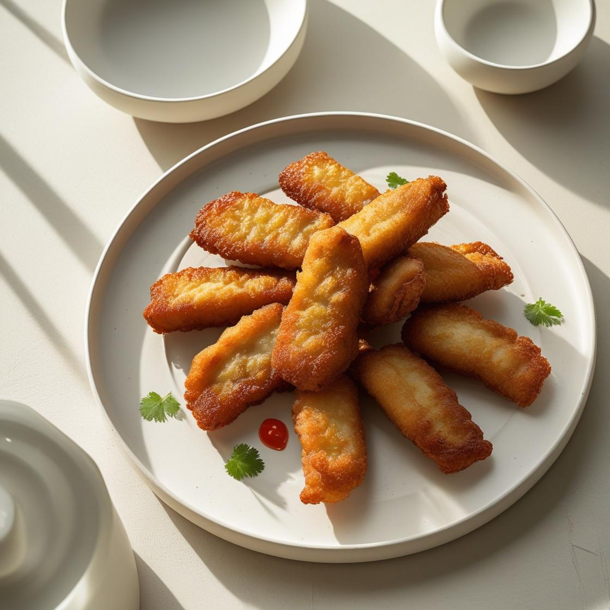

Tempe Mendoan

Tempe Mendoan adalah camilan khas Banyumas berupa tempe yang digoreng
setengah matang dengan balutan tepung berbumbu, cocok disantap selagi
hangat.
Bahan:
- 1 papan tempe, iris tipis lebar
- 100 gram tepung terigu
- 2 sdm tepung beras
- 2 batang daun bawang, iris halus
- 3 siung bawang putih, haluskan
- 1/2 sdt ketumbar bubuk
- Garam dan air secukupnya
- Minyak goreng secukupnya
Cara Memasak:
-
Campurkan tepung terigu, tepung beras, bawang putih, ketumbar, garam,
dan daun bawang.
-
Tambahkan air sedikit demi sedikit hingga adonan kental dan tidak
terlalu cair.
- Celupkan irisan tempe ke dalam adonan tepung.
-
Goreng dalam minyak panas sebentar saja hingga bagian luar matang namun
dalamnya masih lembek (mendoan).
-
Angkat dan sajikan selagi hangat dengan sambal kecap atau cabai rawit.
Tonton Video di YouTube
← Kembali ke Beranda